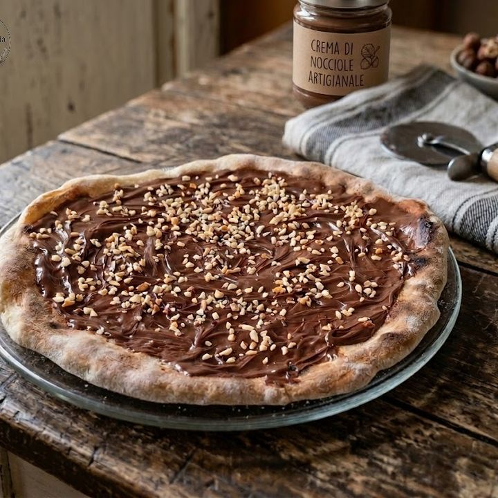

Pizza Dolce (Nutella, Pistacchio o Farcitura a Scelta)
Un'irresistibile variante golosa della classica pizza. Un impasto lievitato soffice e profumato, cotto in forno e farcito generosamente con crema alla Nutella, crema al pistacchio, frutta fresca o granelle croccanti.

Ingredienti
Per l'Impasto Dolce:
- 300g di Farina 00 (o metà 00 e metà Manitoba)
- 180ml di Acqua tiepida (o latte per una consistenza più soffice)
- 40g di Zucchero semolato
- 25g di Burro ammorbidito (oppure 2 cucchiai di olio di semi)
- 10g di Lievito di birra fresco (o 3g di lievito secco)
- 1 pizzico di Sale fino
- 1/2 cucchiaino di Estratto di vaniglia o scorza di limone
Per la Farcitura (A scelta dopo la cottura):
- Variante Cioccolato: 200g di Nutella o crema spalmabile alle nocciole.
- Variante Pistacchio: 200g di Crema al pistacchio e granella di pistacchi tostati.
- Variante Frutta: Fragole a fettine, banane, frutti di bosco o foglie di menta fresca.
- Finitura: Zucchero a velo per spolverizzare e scaglie di cioccolato bianco/fondente.
Procedimento
- Preparazione dell'impasto: Sciogli il lievito e lo zucchero nell'acqua tiepida in una ciotola capiente. Unisci la farina, la vaniglia e inizia ad impastare.
- Incorporazione del grasso: Aggiungi il sale e il burro morbido a pezzetti (o l'olio), lavorando l'impasto per circa 10 minuti fino a renderlo liscio, elastico ed omogeneo.
- Prima lievitazione: Forma una palla, adagiala in una ciotola spennellata d'olio, copri con pellicola trasparente e lascia lievitare in un luogo caldo per 2 ore (fino al raddoppio).
- Stesura: Dividi l'impasto in due panetti. Stendi ciascun panetto con le mani su una teglia con carta da forno, lasciando i bordi leggermente più alti (come un cornicione). Bucherella delicatamente il centro con una forchetta.
- Cottura della base: Cuoci in forno statico preriscaldato alla massima temperatura (220-230°C) per circa 12-15 minuti, finché i bordi saranno ben gonfi e dorati.
- Farcitura a caldo: Sforna la base e, mentre è ancora ben calda, spalma la Nutella o la crema al pistacchio su tutta la superficie (il calore della pizza la renderà fluida e facile da stendere).
- Decorazione e Servizio: Completa con la granella di pistacchio, la frutta fresca a fettine e una generosa spolverata di zucchero a velo sul cornicione prima di tagliare a spicchi e servire.
💡 Note Finali e Consigli dell'Mastro Pasticcere
- Non cuocere la crema: Non infornare mai la Nutella o la crema al pistacchio insieme all'impasto per evitare che si asciughino o brucino; spalmale sempre subito dopo aver sfornato la pizza.
- Variante Mascarpone: Puoi creare una base di mascarpone lavorato con poco zucchero a velo prima di aggiungere le righe di Nutella o pistacchio.
- Servizio perfetto: Da gustare subito appena fatta, calda e fragrante!